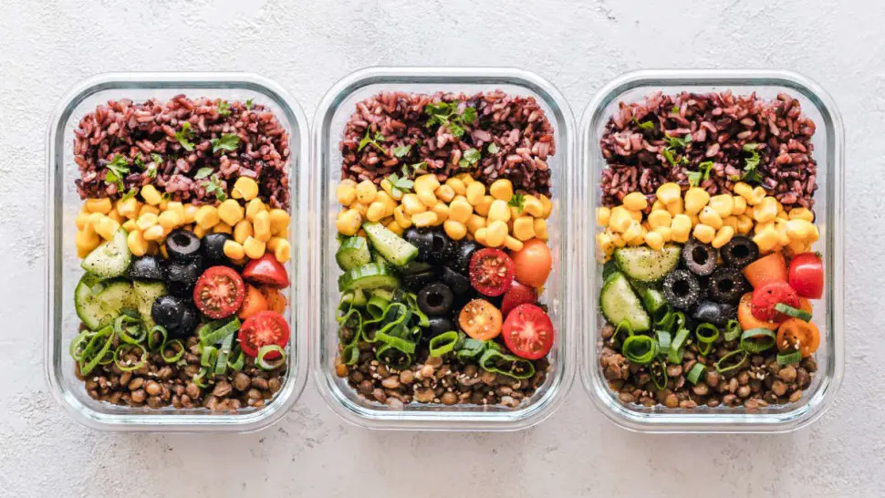

Obesity is a major public health issue, affecting over 650 million adults worldwide [1]. It is associated with numerous comorbidities, including cardiovascular disease, type 2 diabetes, and certain cancers [2]. While the primary cause of obesity is a positive energy balance resulting from excessive caloric intake and insufficient physical activity, the macronutrient composition of the diet can also play a significant role in the development and management of obesity.
Macronutrients, including carbohydrates, proteins, and fats, are essential components of the human diet and provide the body with energy and other nutrients necessary for optimal health. While there is no one-size-fits-all approach to macronutrient intake, studies have shown that the balance of macronutrients in the diet can impact weight management and obesity [3].
Carbohydrates, in particular, have been a focus of research in obesity management due to their impact on blood glucose and insulin levels. High-carbohydrate diets, especially those high in refined sugars and grains, have been associated with increased obesity risk [4]. On the other hand, high-protein diets have been shown to promote weight loss and improve body composition in overweight and obese individuals [5]. Additionally, diets high in healthy
fats, such as the Mediterranean diet, have been associated with reduced obesity risk [6].
Despite the growing body of evidence supporting the role of macronutrients in obesity management, there is no consensus on the optimal macronutrient composition for weight loss and maintenance. Additionally, individual differences in genetics, metabolism, and lifestyle factors may influence the effectiveness of macronutrient management strategies in obesity management. Therefore, personalised approaches to macronutrient management may be necessary for optimal weight management.
This article aims to explore the role of macronutrients in obesity management, including the impact of carbohydrates, proteins, and fats on weight management, and practical applications of macronutrient management for obesity. The article will also discuss the need for individualised approaches to macronutrient management for optimal weight management outcomes.
